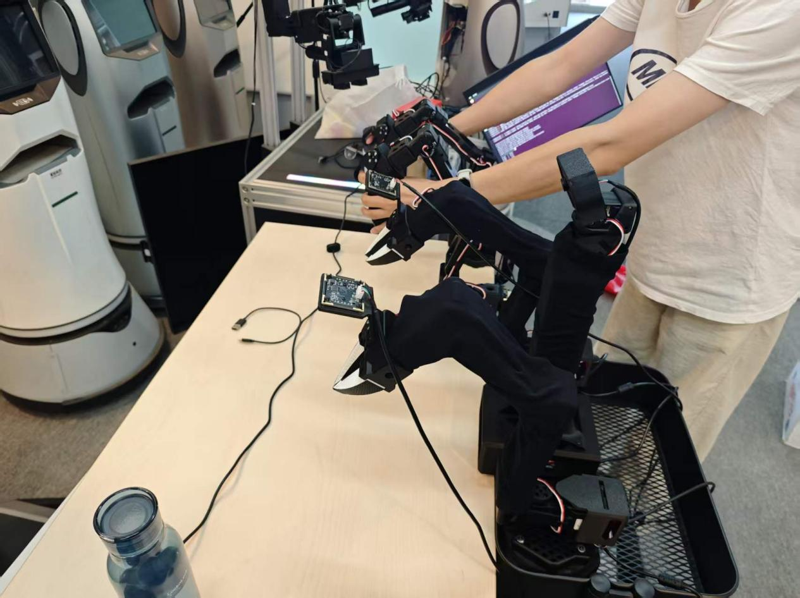
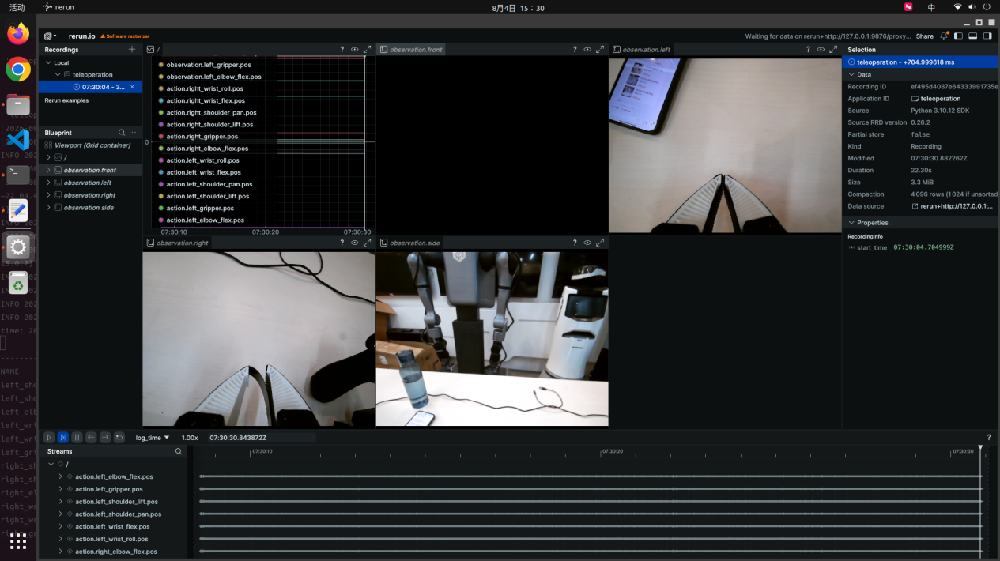

遥操作自检与故障排查
这是本课的"总验收实验"。前三步（串口、校准、摄像头）全部就位后，你将跑通不带摄像头的单臂遥操作（16.74ms · 60Hz）→ 带摄像头的单臂（31.59ms · 32Hz）→ 双臂遥操作，读懂 NORM 姿态表与正常停止打印；再对照第 14 章学会三类故障的处置，最后用第 15 章脚本手册把所有手动命令沉淀成一键脚本。
00课程节奏：五星学习法 · 8 段微课（每段 ≤ 15 min）
本实验按五星学习法组织：先用两个真实故障聚焦问题（CTRL+C 连按致臂卡死、摄像头换口致别名失效），再激活旧知（串口权限与校准数据，衔接 EXP-01~03），接着示证新知（遥操作数据流动画），然后动手应用新知跑通单臂→双臂遥操作，最后借故障诊断与排障融会贯通。全程切成 8 段微课、每段不超过 15 分钟，段间停顿 1~2 分钟消化；纯讲授合计约 100 分钟，其余课时用于动手实操与个别辅导。
| 课段 | 五星阶段 | 时长 | 对应章节 | 本段任务 |
|---|---|---|---|---|
| 课段 1 | 聚焦问题 | 12 min | §01 + §02 前半 | 抛出"CTRL+C 连按致臂卡死"与"摄像头换口致别名失效"两个现场故障 |
| 课段 2 | 激活旧知 | 8 min | §02 后半 | 串口权限 chmod·校准 JSON 路径·EXP-03 摄像头校准旧知衔接 |
| 课段 3 | 示证新知 | 15 min | §03 | 对照实物清单确认主从臂别名、摄像头三路、校准四份 JSON |
| 课段 4 | 示证新知 | 12 min | §06 | 遥操作数据流动画，理解 60Hz 节拍与感知吃算力预算 |
| 课段 5 | 应用新知 | 15 min | §04 步骤1~4 + §05 ①② | 单臂遥操作（不带摄像头→带摄像头），看 connected 与 NORM 表 |
| 课段 6 | 应用新知 | 15 min | §04 步骤5~6 + §05 ③④ | 复制校准→双臂遥操作，12 关节 NORM 表与正常停止 |
| 课段 7 | 应用新知 | 10 min | §07 | 故障诊断选择题自测，全对方可结业 |
| 课段 8 | 融会贯通 | 13 min | §08~§10 | 排障口诀收口，挑战题与思考题拔高迁移 |
讲课提示：课段 1/2 以讲授 + 提问为主；课段 3~4 用实物 + 动画；课段 5~6 边看视频边动手（单臂跑通后暂停让学员试跟随）；课段 7 学员独立完成；课段 8 答疑拔高。段间停顿 1~2 分钟。
01学习目标课段 1 · 聚焦问题 · 12 min
- 能说出遥操作的前置三件套：串口别名（第 03 章）→ 主从臂校准（第 05 章）→ 摄像头配置（第 04 章）
- 能独立跑通单臂遥操作并读懂 time: 16.74ms (60 Hz) 与 31.59ms (32 Hz) 两档打印的含义
- 能完成双臂前的校准数据复制（mkdir + 4 条 cp）并执行 bi_so100 双臂遥操作命令
- 掌握正确停止方式：CTRL+C 只能按一次，识别 disconnected 正常停止打印与视频窗手动关闭
- 能对第 14 章三类故障对症下药：权限 Errno 13、FileExistsError、退出时臂卡住
- 会用第 15 章 0_config.yaml + bash 脚本把校准、遥操作、采集、训练串成流水线
02原理讲解：遥操作是怎么"隔空传动"的课段 1 收尾 + 课段 2 · 激活旧知 · 8 min
打个比方：遥操作就像提线木偶 + 同声传译。你牵动主臂（leader）的关节，主臂编码器把每个关节的角度读出来；LeRobot 进程以 60Hz 的"节拍"（每 16.7ms 一次）把这组角度翻译成指令，经串口发给从臂（follower）的舵机——从臂就像被无形的手牵着的木偶，实时复现你的动作。整条链路没有"先算路径再执行"的中间模块，关节角直接进出，这就是最贴近端到端的一次数据流动。
再看两个关键数字：不带摄像头时 16.74ms（60Hz）几乎全速跟随；加上两路 640×480 摄像头后变 31.59ms（32Hz），双臂加摄像头 36.29ms（28Hz）——图像采集与显示挤占了节拍。这就是"感知会吃算力预算"的最直观体现。另外，退出时CTRL+C 只能按一次：第一下让程序走 finally 断开串口、关闭相机，连按会打断清理，臂就可能保持失锁前的力矩状态卡住。
/dev/arm_master_left 等）；② EXP-02 的"先电源后 USB"插拔顺序；③ EXP-03 的摄像头校准 JSON 路径。本课把它们串成一条遥操作链路——别名找口、校准定零位、摄像头给感知，缺一不可。▍实物对照：单臂工位、双臂遥操作现场与带摄像头视频弹窗



03硬件与材料课段 3 · 示证新知 · 15 min
| 类别 | 清单 | 说明 |
|---|---|---|
| 主从臂 | 主臂 ×2、从臂 ×2 | 别名 /dev/arm_master_left·right、/dev/arm_slave_left·right（第 03 章就绪） |
| 摄像头 | USB 三路 | /dev/cam_left（手臂）、/dev/cam_right（右手）、/dev/cam_head（头部） |
| 校准数据 | 4 份 JSON | so101 单臂校准须完成；双臂另需 cp 成 so100/bimanual_* 四份 |
| 桌面条件 | 固定、无遮挡 | 主从臂正确安装至桌面，周围无遮挡物，接线正确 |
| 脚本包（本课） | 0_config.yaml + 1~9 号 bash 脚本 | 第 15 章命令行脚本操作手册 |
/dev/arm_slave_left·right / /dev/arm_master_left·right；摄像头编号：/dev/cam_left（左手）、/dev/cam_right（右手）、/dev/cam_head（头部）。两条准备项：① 主从臂正确安装至桌面、无遮挡；② 接线正确（先电源后 USB）。04步骤实践：单臂 → 双臂跑通遥操作课段 5~6 · 应用新知 · 2×15 min
conda activate lerobot + sudo chmod 666 /dev/arm* 放行串口CTRL+C 单次停止，见到 leader/follower disconnected 打印为正常--robot.cameras=… 两路 + --display_data=true 跑带摄像头版：31.59ms (32 Hz)、NORM 六关节表、弹出夹爪/顶部视频窗（可调顶部摄像头对准作业区）bi_so100_follower/bi_so100_leader 双臂命令：12 关节 NORM 表 16.72ms (60 Hz)；带摄像头版 36.29ms (28 Hz)；视频窗停止后需手动点 X单臂遥操作.mp4（第 06 章配套）
左臂遥操作全流程演示：命令输入 → connected → 60Hz 跟随 → CTRL+C 正常停止，对应步骤 1~4。
双臂遥操作.mp4（第 07 章配套）
双臂版完整操作：先复制 4 份校准 JSON，再执行 bi_so100 命令，12 关节同步跟随与单次停止。
right_leader_arm disconnected / right_follower_arm disconnected——这就是"正常停止"的标准长相。运行时终端实时刷新 NORM 六关节表（gripper.pos / shoulder_pan / shoulder_lift / elbow_flex / wrist_flex / wrist_roll），同时弹出夹爪与顶部摄像头视频窗口；停止后视频窗需手动点 X 关闭。05关键命令随课段 5 / 6 对照使用
# ① 单臂遥操作·不带摄像头（第 06 章 3） conda activate lerobot sudo chmod 666 /dev/arm* lerobot-teleoperate \ --robot.type=so101_follower \ --robot.port=/dev/arm_slave_left \ --robot.id=left_follower_arm \ --teleop.type=so101_leader \ --teleop.port=/dev/arm_master_left \ --teleop.id=left_leader_arm # 正常打印：connected … time: 16.74ms (60 Hz)，动主臂从臂跟随 # ② 单臂遥操作·带摄像头（第 06 章 4，追加两段） lerobot-teleoperate … --robot.cameras="{ left: {type: opencv, index_or_path: \"/dev/cam_left\", width: 640, height: 480, fps: 30, fourcc: \"MJPG\"}, side: {type: opencv, index_or_path: \"/dev/cam_head\", width: 640, height: 480, fps: 30, fourcc: \"MJPG\"}}" \ --display_data=true # 打印 time: 31.59ms (32 Hz) + 六关节 NORM 表 + 视频窗口 # ③ 双臂前·复制校准 so101 → so100/bimanual（第 07 章 2，务必执行） mkdir -p ~/.cache/huggingface/lerobot/calibration/robots/so100_follower/ mkdir -p ~/.cache/huggingface/lerobot/calibration/teleoperators/so100_leader/ cp …/robots/so101_follower/left_follower_arm.json …/robots/so100_follower/bimanual_follower_left.json cp …/robots/so101_follower/right_follower_arm.json …/robots/so100_follower/bimanual_follower_right.json cp …/teleoperators/so101_leader/left_leader_arm.json …/teleoperators/so100_leader/bimanual_leader_left.json cp …/teleoperators/so101_leader/right_leader_arm.json …/teleoperators/so100_leader/bimanual_leader_right.json # ④ 双臂遥操作（第 07 章 3，CTRL+C 只按一次） lerobot-teleoperate \ --robot.type=bi_so100_follower \ --robot.left_arm_port=/dev/arm_slave_left --robot.right_arm_port=/dev/arm_slave_right \ --robot.id=bimanual_follower \ --teleop.type=bi_so100_leader \ --teleop.left_arm_port=/dev/arm_master_left --teleop.right_arm_port=/dev/arm_master_right \ --teleop.id=bimanual_leader --display_data=true # 12 关节 NORM 表，time: 16.72ms (60 Hz)；带摄像头再追加三路 cameras JSON # ⑤ 停止与脚本化（第 15 章 1） bash 1_calibrate_all.sh # 依次校准 左从→右从→左主→右主 bash 2.3_teleoperate_left_with_cameras.sh # 左臂带摄像头遥操作 bash 3_teleoperate_dual_arm.sh # 内含 mkdir+4cp+双臂命令，一键完成
cp 把 so101 单臂校准 JSON 改名为 bimanual_* 复制到 so100 目录——不做这步双臂命令会找不到校准数据。脚本 3_teleoperate_dual_arm.sh 已将 mkdir + 4cp + bi_so100 命令全打包，一键完成。06动画讲解：遥操作数据流（人手→主臂→节拍→从臂）课段 4 · 示证新知 · 12 min
下图把一次遥操作循环拆开：手的运动被主臂采样，按 60Hz 节拍翻译，经串口抵达从臂；带摄像头时图像从旁路汇入，帧率因此从 60Hz 掉到 32Hz（双臂再降到 28Hz）：
07互动练习：故障诊断选择题课段 7 · 应用新知 · 10 min
下面 4 个故障现场全部取自第 06/07/14/15 章真实打印。选出你认为正确的处置，点一下立即判分：
08常见问题课段 8 · 融会贯通 · 13 min
- PermissionError: [Errno 13] … '/dev/ttyACM0'（第 14 章 1）：串口没放权限 →
sudo chmod 666 /dev/ttyACM*；日常用别名前先sudo chmod 666 /dev/arm* - FileExistsError: …test/put_cube_on_plate（第 14 章 2）：数据集目录已存在——要续录就改
--dataset.repo_id名称；数据不要了就rm -rf ~/.cache/huggingface/lerobot/test/put_cube_on_plate - 退出时从臂卡住掰不动（第 14 章 3）：多因 CTRL+C 连按打断清理——拔掉该设备电源再插回即可恢复；以后只按一次
- 带摄像头弹 winit/DISPLAY 报错打印：第 06/07 章原文日志中该行之后仍继续出现 connected 与 time 打印——以紧跟其后的 connected、60Hz/32Hz 节拍打印为运行判据
- 遥操作没反应、一直没节拍打印：第 07 章提示"如果未开始，则多点击几下回车继续"；同时核对串口别名与校准 JSON 是否已按 4 条 cp 复制成 bimanual_*
- 双臂找不到校准：第 07 章强调 cp "务必执行"——so101 单臂的 JSON 文件名与 bimanual 所需文件名不同，不复制就对不上号
09拓展挑战课段 8 · 融会贯通
0_config.yaml：把 task_name、student_name、episode_time=6、reset_time=2、episode_num=2、train_steps=1000、batch_size=8 逐项用自己的话注释；再沿 1_calibrate_all → 2.x_teleoperate → 4_record → 5_train → 6_inference 的调用链，画出"校准→遥操作演练→采集→训练→推理"数据流向草图。